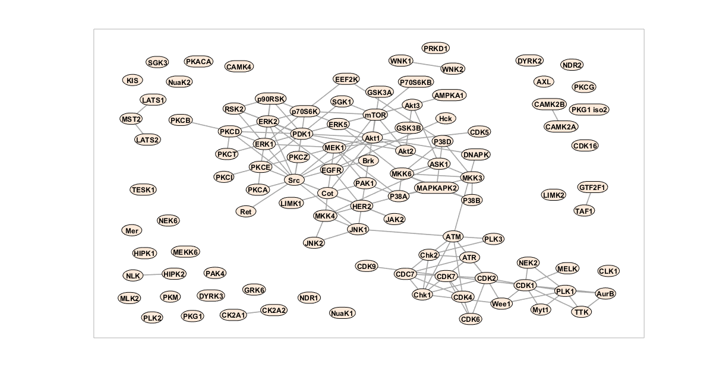
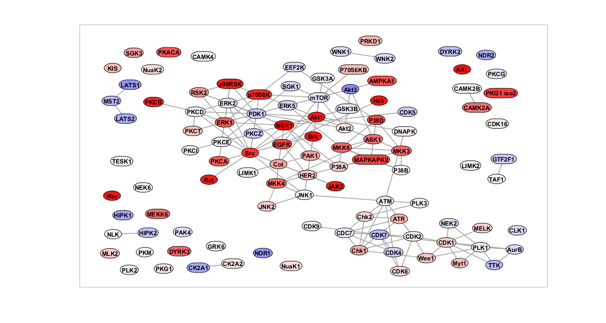
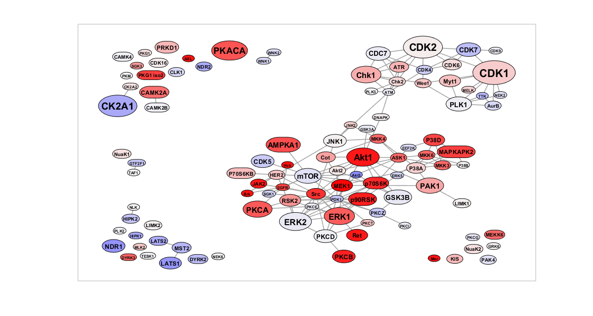
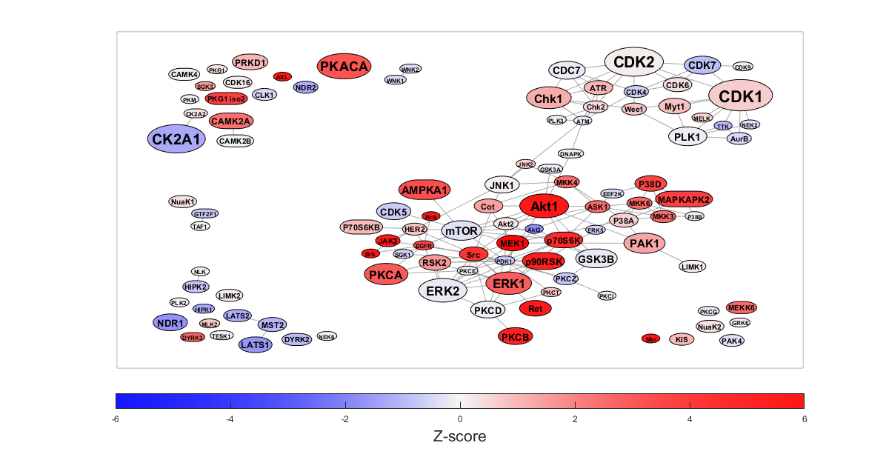

Demo (Kinase PPI Network)
Contents
Load the sample dataset (Kinase PPI Network)
This sample dataset loads two variables: NodeList, a table with 3 fields (Kinases):
- Name: Identifier for the node
- ZScore: A quantitative score
- NumTargets: Number of targets used in quantitative score calculation
EdgeList, a table with 2 fields (PPI interactions):
- Node1: Name of first endpoint u of an edge (u, v)
- Node2: Name of second endpoint v of an edge (u, v)
The goal will be to create a network figure between kinases, node colors reflecting the Z-scores and sizes reflecting NumTargets.
load('data/sample_network_kinase_ppi.mat'); disp(NodeList(1:5, :)) % Display the first 5 rows disp(EdgeList(1:5, :)) % Display the first 5 rows
Name ZScore NumTargets
_________ ________ __________
{'SGK1' } -0.53248 1
{'CDC7' } -0.16278 6
{'EEF2K'} -0.41983 1
{'Chk1' } 1.2041 12
{'P38D' } 3.6201 4
Node1 Node2
_________ ________
{'CDC7' } {'Chk1'}
{'EEF2K'} {'P38D'}
{'SGK1' } {'PDK1'}
{'CDC7' } {'Chk2'}
{'Chk1' } {'Chk2'}
Initial preparation
rng(1, 'twister'); % For reproducibility % Map the edges and generate the network as a sparse matrix [~, i1] = ismember(EdgeList.Node1, NodeList.Name); [~, i2] = ismember(EdgeList.Node2, NodeList.Name); nNode = height(NodeList); W = sparse(i1, i2, true, nNode, nNode); W = W | W'; % Make the matrix symmetric % Initialize the networkvisualizer for the current network net = networkvisualizer(W);
Add labels and draw the network
% Add labels to nodes net.setNodeLabels(NodeList.Name); net.setNodeSizes('auto'); % Prepare the figure and plot figure(1); clf(); set(gcf, 'Position', [0 0 1200 640]); set(gcf, 'Color', [1 1 1]); plot(net); movegui('center');
Apply quantitative coloring based on Z-Scores
% Apply quantitative coloring sigmoid_scale = 2; applySigmoid = @(x, k) 2 ./ (1 + exp(-x/k)) - 1; applyColoring = @(q) color_spacing_continuous(q, [-1 0 1], [0 0 1; 0.96 0.96 0.96; 1 0 0]); colors = applyColoring(applySigmoid(NodeList.ZScore, sigmoid_scale)); net.setNodeColors(colors); % Plot the figure again figure(1); plot(net);
Adjust the node sizes based on number of targets
% Set the node sizes and reapply layout sizeScaling = 1.5 + log2(NodeList.NumTargets + 0.5); net.scaleNodeSizes(sizeScaling, 0.8); net.dolayout(); % Scale the labels based on node size net.setNodeFontSize(2 + 2 * sizeScaling); % Enlarge the node sizes by 40% and make sure they contain the labels net.setNodeSizes(net.NodeSizes*1.4); net.setNodeSizes('auto'); % Plot the figure again figure(1); plot(net);
Further tweaking and legend
% Set the edge line width to be less visible/obstructive net.setEdgeLineWidth(0.75); % Plot the figure again figure(1); plot(net); % Add a legend to the figure from -6 to 6 zmin = -6; zmax = 6; color_scale = applySigmoid(linspace(zmin, zmax, 200)', sigmoid_scale); colormap(applyColoring(color_scale)); clim([zmin, zmax]); c = colorbar('Location', 'southoutside'); c.Label.String = 'Z-score'; c.Label.FontSize = 16;